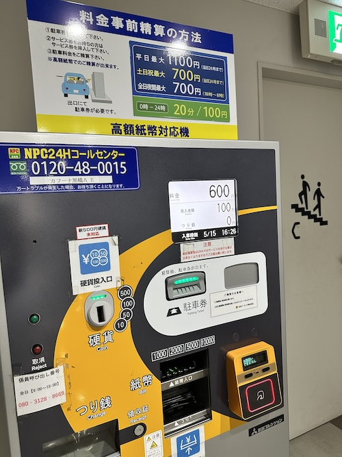
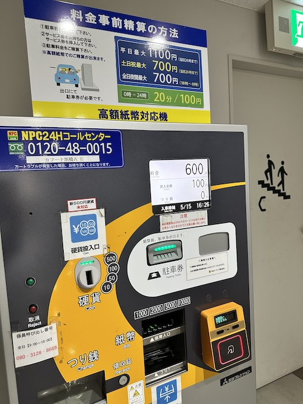

おすすめの駐車場体験 - 2024/05/15 晴れ
新500円玉の罠
この日の夕方、県立図書館にて業界団体の集まりがあり、旭橋カフーナの駐車場を利用しました。
この駐車場はビル内にある精算機で予め精算を済ませて、車で出る時は精算済み駐車券を機械にいれるとゲートがオープンする仕組みです。
で、その帰り、精算機で駐車料金を精算しようとビル内の精算機に向かうと、精算機横でスマホをいじっている女性が。
すると、精算機の表示がフリーズして駐車券が出てこない、投入した小銭も返却できない事態に。
何が起きたのか分からず、とりあえず1回機械を叩いてみたら、横にいた女性が
「なんだろ、精算機のこんな側で誰か待ってるのかな。」
と横目で見つつ、自身の駐車券を精算機へ入れて金額を確認。「600円です」
と表示されたので、
「電子マネーが使えるといいのにな」
と思いつつ、財布にちょうど小銭があったので100円1枚と500円1枚を投入。すると、精算機の表示がフリーズして駐車券が出てこない、投入した小銭も返却できない事態に。
何が起きたのか分からず、とりあえず1回機械を叩いてみたら、横にいた女性が
「この精算機、新500円玉使えないようなんです。私も今、500円入れてしまって、コールセンターに電話して係を呼んでいるところでした。30分くらい待ってます。」
「先に教えてほしかった。。。」
目を凝らして精算機を見ると、小さく
「新500円玉非対応です」
的なシールが貼られていました。。。そんな注意深く精算機を観察する人いる？自律神経を整える6秒間
このままだと駐車券が無くて、ゲートを出ることができない。早く出たいんだが、これはなんの試練なんでしょう。と考えているところへ係員が到着。
若い頃なら切れ散らかしていたでしょうね。
怒りを感じたら6秒深呼吸などで間を開けると自律神経が整い、リラックス状態になるらしいです。何かのアンガーマネジメントの本読んでおいてよかった。と思ってコールセンターへ電話。。。
すると、まったく繋がらない。驚くほど繋がらない。20分ほど
先の女性の方に
20分ほど待ってようやくオペレーターにつながり
しかも現場に来た係員が精算機のことをよく知らないようで、四苦八苦しながらガチャガチャとあちこちイジってようやく私の駐車券を発見。
別れ際、名も知らぬ特殊訓練を受けたであろう女性と
まあ、面白い経験だったなと、車を運転して出口のゲートにへ。すると、駐車券入れてもゲートが開かんし。
大阪とかなら刃傷沙汰になってるんじゃ？と思っていると、先程の係員がどこからともなく走ってきて、手動でゲートをこじあけてくれました。
「あ、よかった。私も新500円玉を投入してしまって困ってました。」
と係員に話す私。「コールセンターに電話されました？いったんコールセンターに電話して受付してもらわないと、対応できないんです。勝手に精算済にすると怒られるので。」
って。若い頃なら切れ散らかしていたでしょうね。
怒りを感じたら6秒深呼吸などで間を開けると自律神経が整い、リラックス状態になるらしいです。何かのアンガーマネジメントの本読んでおいてよかった。と思ってコールセンターへ電話。。。
すると、まったく繋がらない。驚くほど繋がらない。20分ほど
「順番にお繋ぎしています、しばらくお待ち下さい。」
アナウンス。先の女性の方に
「こんなん待ちました？」
と聞くと、
「はい、すごく繋がるまで時間かかりました。」とのこと。
「なんて心の寛容な人なんだろう。時間に追われることが多い現代、こういうマインドが求められているのかもしれない。きっと特殊なトレーニングを受けている方なんだろうな。」
と、名前も知らない人をリスペクトしてしまいました。20分ほど待ってようやくオペレーターにつながり
「電話しろって言われたのでやりました。」
と話すと
「はい、オッケーです！ご迷惑おかけしました！」
的な10秒くらいの軽いやり取りで終了。このやり取りいる？と、自身の心の狭さを思い知る私。しかも現場に来た係員が精算機のことをよく知らないようで、四苦八苦しながらガチャガチャとあちこちイジってようやく私の駐車券を発見。
「精算済になってますので、あとは通常通りゲートをあけて出て下さい。」
と、汗だくになった係員から駐車券を受け取りやっと車へ向かいました。別れ際、名も知らぬ特殊訓練を受けたであろう女性と
「お疲れさまでした」
と謎の連帯感を感じつつ挨拶を交わし、それぞれ帰路へ。まあ、面白い経験だったなと、車を運転して出口のゲートにへ。すると、駐車券入れてもゲートが開かんし。
大阪とかなら刃傷沙汰になってるんじゃ？と思っていると、先程の係員がどこからともなく走ってきて、手動でゲートをこじあけてくれました。
人間の不完全さ、自身と向き合いたい方へ
高度にAIが発達し、DXだ、なんだと叫ばれている高度に情報化が進んだ社会では、我々人間はもっと曖昧で不完全な存在であることをつい忘れ、他人にも自分にもバグの無い完全で効率的なあり方を求めてしまいがちです。
そんな違和感を感じた時、自身を今一度見つめ直したい時、ぜひ一度、カフーナ旭橋の駐車場で新500円玉を投入する体験をしてみて下さい。週末だと最大700円とお手頃な価格で貴重な体験を得ることができます。 
そんな違和感を感じた時、自身を今一度見つめ直したい時、ぜひ一度、カフーナ旭橋の駐車場で新500円玉を投入する体験をしてみて下さい。週末だと最大700円とお手頃な価格で貴重な体験を得ることができます。 